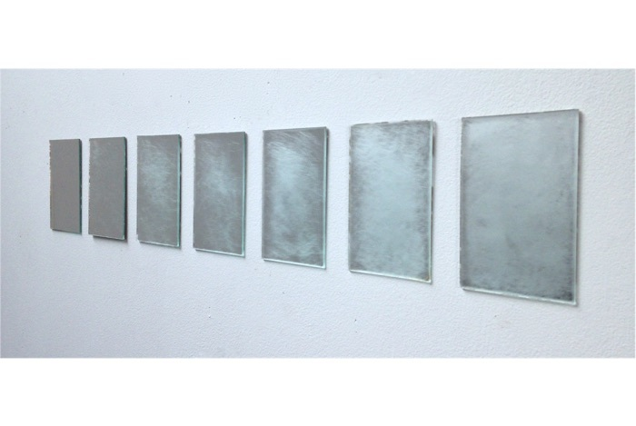

pequeno exercício para melhorar o mundo (small exercise to improve the world)

2014
instalação (installation)
sequência de 7 espelhos apagados gradualmente com lixa d’água
(a series of 7 mirrors erased with sandpaper)
8 x 13 cm [cada / each]